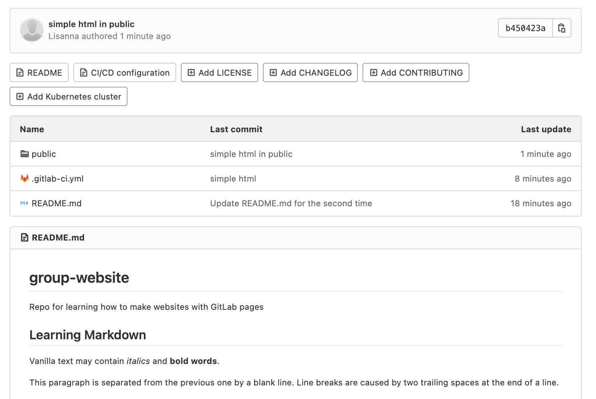

Come anticipato nei capitoli precedenti, per pubblicare un sito web
con GitLab Pages si possono usare diverse tecnologie come Jekyll,
Gatsby, Hugo, Middleman, Harp, Hexo e Brunch, solo per citarne alcune. È
inoltre possibile pubblicare qualsiasi sito web statico scritto
direttamente in HTML, CSS e JavaScript. Pages non supporta
l’elaborazione dinamica lato server, come invece richiedono
.php e .asp.
La chiave per avere il sito web funzionante come previsto è il file
di configurazione di GitLab CI, chiamato .gitlab-ci.yml.
Questo file configura il modo in cui il sito web sarà costruito. È
scritto in YAML, che ha una propria sintassi che non
spiegheremo nei dettagli, quindi si consiglia di seguire questa guida
rapida prima di configurarlo. Per funzionare correttamente, deve essere
collocato nella directory principale, cioè allo stesso livello del
nostro file README, nella cartella principale del progetto.
Il fatto più importante è che con GitLab CI si ha il controllo sulle
proprie build. Non si troveranno in una scatola nera invisibile in cui
non si sa cosa stia succedendo! Sarete in grado di vedere qualsiasi
build in esecuzione dal vivo navigando nel Pipelines del
vostro progetto (lo faremo più avanti). È anche possibile aggiungere
qualsiasi comando allo script .gitlab-ci.yml. Questo
permette di fare sul server remoto praticamente tutto ciò che si fa
sulla macchina locale. Più avanti in questa lezione verranno illustrati
alcuni esempi su come eseguire comandi di compilazione personalizzati
attraverso il file .gitlab-ci.yml..
Lavorare localmente o in GitLab
Questa lezione non ha lo scopo di insegnare Git e come lavorare
localmente (nel proprio portatile) su un progetto versionato e gestito
in Git. Tuttavia, se si ha una conoscenza di base di Git, si possono
eseguire i passi successivi a livello locale per imparare a sviluppare
correttamente un sito web: testarlo localmente e fare il commit e il
push solo di versioni significative. Al contrario, lavorare sulla
piattaforma online ci costringerà a fare commit di versioni che non
saranno molto significative, per il gusto di imparare.
Se si ha una conoscenza di base di Git, è possibile configurare un
progetto locale per la distribuzione. Clonare il proprio
repository localmente (controllare la lezione git novice se si ha
bisogno di rivedere cosa fa il comando git clone e come
git push le modifiche da un progetto locale a uno remoto).
In breve, ora si dovrebbe eseguire, da un terminale:
e continuare a lavorare nella cartella clonata. Potete aggiungere e
modificare i vostri file tramite vim o da qualsiasi editor
di vostro gradimento - non è necessario lanciarlo dal terminale, ma
ricordatevi di tenere il terminale aperto per quando dovrete riportare
le modifiche sul remoto.
Inizieremo con l’esempio più semplice, un semplice sito HTML con
pagine GitLab.
Creiamo il file .gitlab-ci.yml direttamente nel nostro
progetto GitLab online. Avremo bisogno di lavorare su più file. Per
farlo, vogliamo aprire l’IDE Web facendo clic sul pulsante in alto a
destra del nostro progetto: Edit > Web IDE.
Se è la prima volta che lo si apre, apparirà un pannello di
personalizzazione. Ignoratelo per ora, ma sappiate che il
look-and-feel delle prossime schermate potrebbe differire da
quello che vedete in base al modello predefinito. Dovreste comunque
avere a disposizione gli stessi menu e file. In particolare, il
EXPLORER (un esploratore di file) sul lato destro elenca i
file e le cartelle del repository (al momento, dovrebbe esserci solo il
file README) e il pannello a destra mostra il contenuto di
tali file quando li si apre.
Passare il mouse sul nome del progetto nella cartella
EXPLORER per vedere un piccolo menu che include un’icona
per aggiungere file alla cartella. Fare clic su di essa e creare un file
.gitlab-ci.yml. Quindi, riempirlo con il seguente
contenuto:
Create il vostro file .gitlab-ci.yml e scriveteci
dentro:
YAML
pages:stage: deployscript:- echo 'Nothing to do...'artifacts:paths:- publiconly:- main
Questo codice crea un lavoro chiamato “pages” che dice a GitLab di
dispiegare il contenuto del sito web in
public, ogni volta che un commit viene
spinto e solo nel ramo principale. Non ha
molto da fare se non guardare il contenuto in pubblico, quindi la
configurazione dello “script” è fondamentalmente nulla (fa solo l’eco
“Nothing to do” al terminale).
Validazione del file gitlab-ci.yml
Prima di aggiungere qualsiasi .gitlab-ci.yml al
progetto, è possibile convalidarne la sintassi con lo strumento chiamato
[CI Lint] (https://docs.gitlab.com/ee/ci/lint.html). Per accedere a
questo strumento è necessario aver effettuato il login nel proprio
account. Lo si trova navigando nelle Pipeline del proprio progetto: c’è
un pulsante in alto a destra dello schermo. Per ulteriori informazioni,
è possibile leggere la documentazione
completa di .gitlab-ci.yml.
Rami Git e file GitLab CI
È possibile avere un .gitlab-ci.yml distinto per ogni
progetto, ma anche configurazioni GitLab CI distinte per ogni ramo.
Questo significa che si può testare lo script in rami paralleli prima di
inviarlo al ramo principale. Se la compilazione ha successo, si fa il
merge. In caso contrario, è possibile apportare modifiche e riprovare a
costruire senza rovinare il ramo principale.
Successivamente, creeremo la cartella public
(utilizzando l’icona nuova cartella nel menu EXPLORER),
contenente un file index.html.
Lavorare localmente o in GitLab
Se state lavorando in locale, potete farlo dal terminale
attraverso:
BASH
mkdir publiccat> public/index.html
popolate il nuovo file index.html con questo
contenuto:
Prima di proseguire con il capitolo, provate a immaginare quale sarà
la visualizzazione finale della pagina web risultante. Potete disegnarla
su un foglio di carta.
Lavorare localmente o in GitLab
se state lavorando in locale, ora eseguite il commit e il push delle
modifiche. È possibile farlo dalla cartella principale del progetto
attraverso:
BASH
git add .git commit -m"simple html in public"git push -u origin main
Se avete creato il file .gitlab-ci.yml e la cartella
public contenente il file index.html, dovreste
vederli tutti nella cartella EXPLORER. Ora, salviamo la
prima versione del nostro progetto (commit), selezionando il menu
Source control sul lato sinistro.
questo cambierà il pannello a sinistra, che elencherà i file
modificati (due file aggiunti) e chiederà all’utente di inserire un
messaggio di commit (una breve descrizione della versione del progetto
di cui si sta eseguendo il commit) nella casella di testo in alto. Il
nostro messaggio di commit in questo caso potrebbe essere: “Deploy
simple HTML through GitLab pipeline”. Inserire questo o un altro
messaggio e poi Commit to 'main'.
Tornare al progetto remoto in GitLab. La schermata seguente mostra
come dovrebbe apparire:

la cartella public contiene il file
index.html. Il comando push appena lanciato dovrebbe aver
attivato la prima pipeline. Nel menu a sinistra, scegliere
Build > Pipelines per visualizzarla.
Poiché ci siamo fermati e abbiamo controllato l’aspetto della nostra
cartella remota, la vostra pipeline potrebbe già essere . In caso contrario, è sufficiente attendere che lo
diventi.
Il vostro primo sito web è stato distribuito con successo! Vi
chiedete dove potete vederlo? Andate su Deploy > Pages.
L’URL del vostro sito web è riportato lì. Dovrebbe essere:
https://<your user name>.embl-community.io/group-website.
La schermata sottostante contiene anche un avviso interessante.
Leggere sempre questo tipo di messaggi richiesti dall’interfaccia di
GitLab, di solito sono rilevanti per l’utente. Dice: “Il controllo degli
accessi è abilitato per questo sito web di Pages; solo gli utenti
autorizzati potranno accedervi. Per rendere il sito web disponibile al
pubblico, andare in Impostazioni del progetto > Generali >
Visibilità e selezionare Tutti nella sezione Pagine” Il link rimanda
anche a un’ulteriore documentazione, se volete saperne di più. Seguite
le istruzioni se volete rendere pubblico il vostro sito web.
indipendentemente dal fatto che sia pubblico o meno, dovremmo essere
in grado di visualizzare il nostro sito web. Cliccate sul link ed eccolo
qui:
Esercizio: Confronto con il proprio schizzo
Il sito web appena implementato ha l’aspetto che pensavate, dato il
codice html nel file indice? Pensavate che sarebbe stato mostrato
qualcos’altro? Discutetene con il collega accanto a voi.
Esercizio: Il template plain-html
GitLab fornisce una serie di modelli di pagine web distribuite
tramite Pages. Uno di questi si chiama “plain-html”, accessibile a questo link. La struttura
generale è abbastanza simile a quella che abbiamo appena utilizzato.
Andare alla cartella public. Ci sono due file qui, uno
style.css e uno index.html.
In questa lezione entreremo nel dettaglio del funzionamento del file
.css, ma potrebbe essere interessante dare un’occhiata alla
sua sintassi e al suo contenuto. Questo tipo di file viene utilizzato
per lo stile del contenuto HTML. Questo file specifico fornisce
istruzioni di stile per tre elementi: il body, il
navbar e il testo del collegamento (a)
all’interno della navbar, che cambia colore quando il mouse vi passa
sopra (a:hover). Non preoccupatevi ora di capire come
funziona esattamente, ma quando visualizzerete questa pagina,
ricordatevi di passare il mouse sopra i link della barra di navigazione
per vederli in azione.
Ora aprite il file index.html. Il suo contenuto è
riportato di seguito.
HTML
<!DOCTYPE html><html><head><meta charset="utf-8"><meta name="generator" content="GitLab Pages"><title>Plain HTML site using GitLab Pages</title><link rel="stylesheet" href="style.css"></head><body><div class="navbar"><a href="https://pages.gitlab.io/plain-html/">Plain HTML Example</a><a href="https://gitlab.com/pages/plain-html/">Repository</a><a href="https://gitlab.com/pages/">Other Examples</a></div><h1>Hello World!</h1><p> This is a simple plain-HTML website on GitLab Pages, without any fancy static site generator.</p></body></html>
È ora di disegnare di nuovo! Disegnate la pagina web risultante, a
partire dal contenuto di questo file HTML. Suggerimento: la navbar è una
barra nella parte superiore della pagina, che ci permette di navigare
nel contenuto del sito.
Domanda facoltativa: come viene utilizzato il file .css?
Come fa il sito web a sapere qual è il file giusto da leggere?
Soluzione
potete andare sul sito
web distribuito per verificare come appare. Di seguito è riportata
una schermata del risultato:
C’è qualche differenza con il vostro schizzo?
Domanda facoltativa: il percorso del file .css è
specificato nel file .html, attraverso:
<link rel="stylesheet" href="style.css">.
Link utili
Ora avete gli strumenti minimi per poter giocare con HTML e css.
Potete copiare i due file dell’ultimo esercizio template nel vostro
repository e provare a modificare la dimensione del testo, il colore
della navbar, aggiungere collegamenti o la formattazione del testo. Se
decidete di creare un fork di questo repository per sperimentare, fate
come chiedono gli autori nel loro file README (un motivo in più per
consultare i file README di ogni altro progetto e compilarli con
attenzione): “Se avete biforcato questo progetto per uso personale, per
favore andate in Settings del vostro progetto e
rimuovete la relazione di biforcazione, che non sarà necessaria a meno
che non vogliate contribuire nuovamente al progetto upstream.”
Un ampio tutorial sugli elementi HTML, che include esempi di moduli,
media e link incorporati, si trova su w3schools. Oltre a
questa, molte altre risorse forniscono esercitazioni sull’HTML; potete
sicuramente sceglierne una che si adatti ai vostri gusti per saperne di
più.
Key Points
GitLab serves pages in your project according to a configuration
file called .gitlab-ci.yml


 . In caso contrario, è sufficiente attendere che lo
diventi.
. In caso contrario, è sufficiente attendere che lo
diventi.